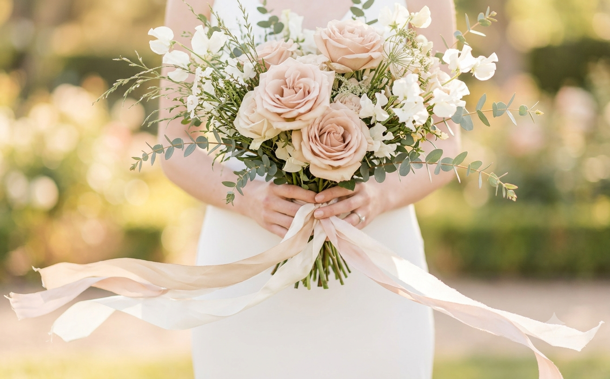
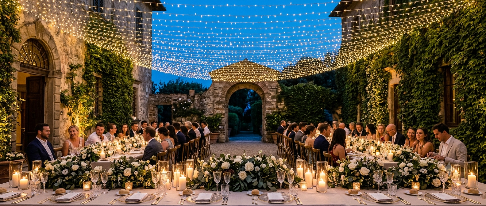
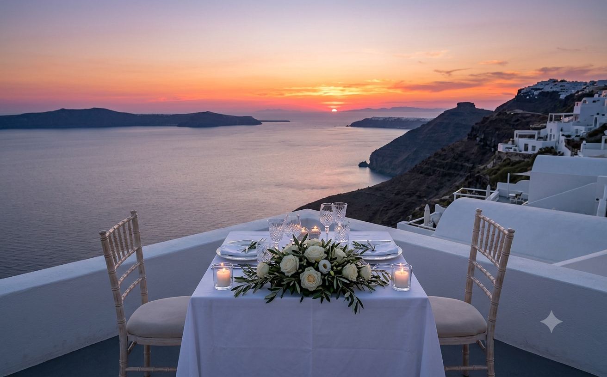
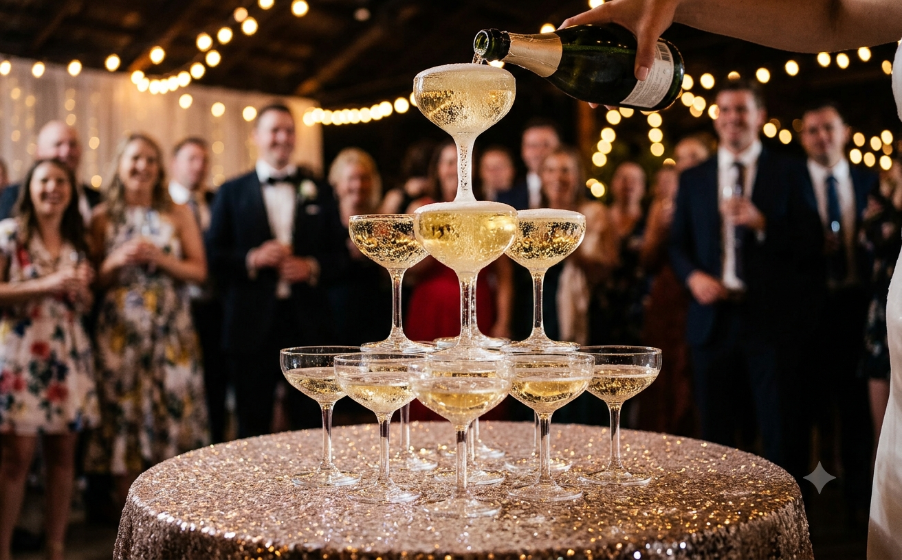
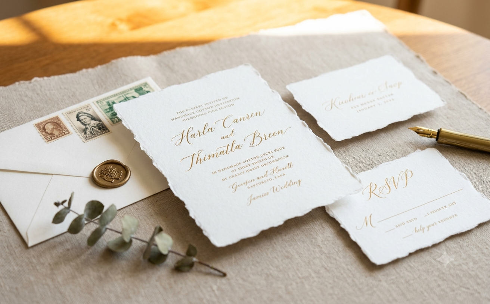
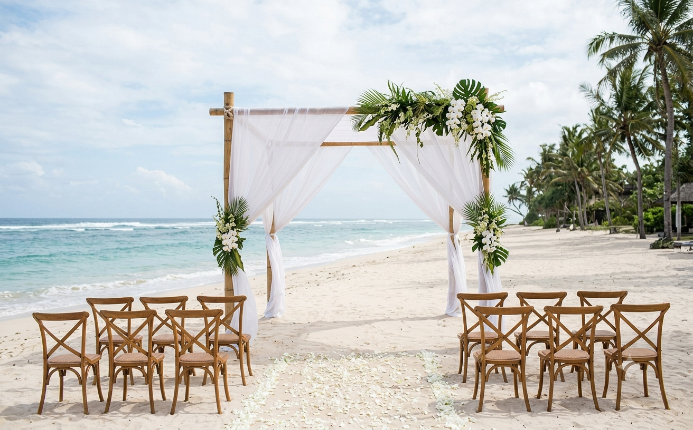
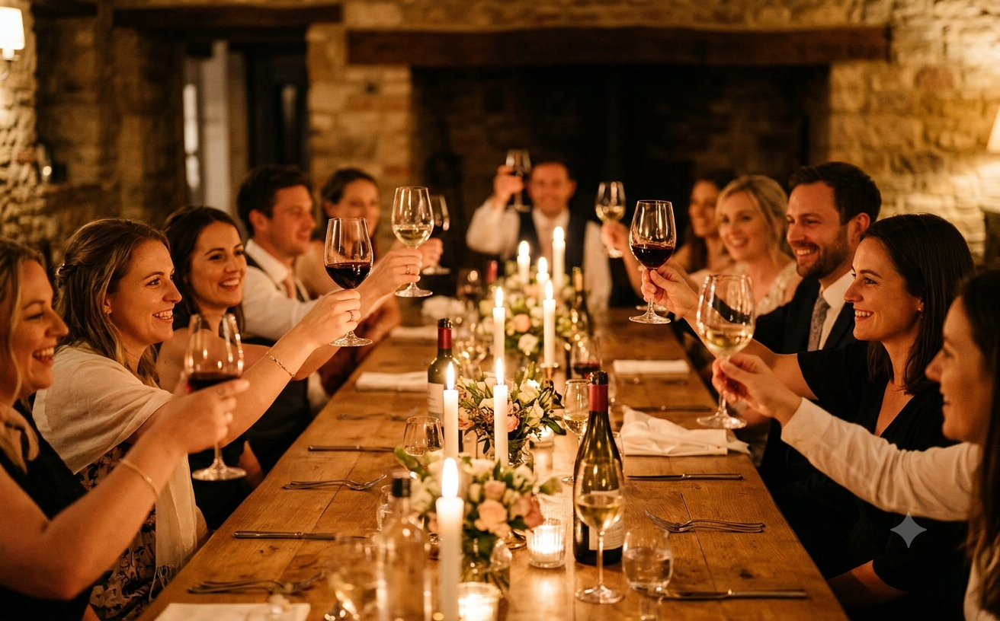

Design & Florals
The Sculptural Floral Movement
Moving past spherical uniformity into botanical installations inspired by Dutch Golden Age still life paintings.
5 min read · by Oliver M.
Curated insights, destination dispatch notes, and styling philosophy from our team of international planners.

Browse our curated library of advice, styled shoots, and destination coordination chronicles.

Moving past spherical uniformity into botanical installations inspired by Dutch Golden Age still life paintings.

A masterclass in chartering ferries, customs for foreign decor, and Italian noise ordinances for late-night soirees.

How we schedule golden hour portraits without leaving your reception guests waiting for dinner.

Why tangible bespoke stationery sets the emotional baseline for your guests four months before the vows.

Uluwatu or Canggu? Everything couples must know about wet-season transitions and private villa permits.

The golden rules for toast timing, speaker placement, and managing sentimental pacing across courses.
Click any ribbon bookmark to quickly filter articles by primary editorial discipline.
Seasonal style guides, venue unveilings, and quiet reflections on the art of hosting.
Thank you for subscribing. Look out for our next curated dispatch on the first of next month.